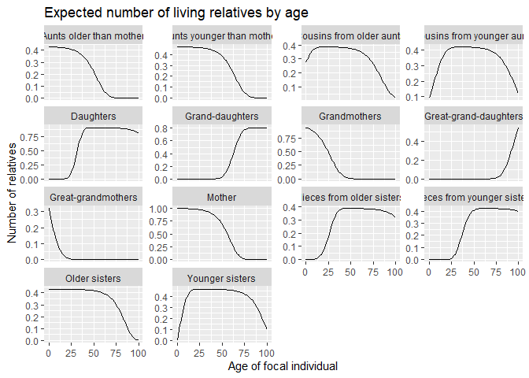

DemoKin is an R package for the demographic analysis of kinship networks using matrix-based models.
It implements methods developed by Caswell and colleagues for estimating the number and age distribution of relatives under various demographic assumptions.
Features
- Estimate kin counts and age distributions for various types of relatives
- Support for one-sex and two-sex models
- Time-invariant and time-varying approaches
- Multi-state models incorporating additional variables like parity or education
- Visualization tools for kinship networks
Usage
Here’s a basic example of how to use DemoKin:
# Run a one-sex time-invariant kinship model using Swedish data from 2015
kin_results <- kin(
p = swe_px[,"2015"], # Survival probabilities
f = swe_asfr[,"2015"], # Fertility rates
time_invariant = TRUE # Use time-invariant model
)
# Visualize the expected number of living relatives by age
kin_results$kin_summary %>%
rename_kin() %>%
ggplot2::ggplot(ggplot2::aes(age_focal, count_living)) +
ggplot2::geom_line() +
ggplot2::facet_wrap(~kin_label, scales = "free_y") +
ggplot2::labs(
title = "Expected number of living relatives by age",
x = "Age of focal individual",
y = "Number of relatives"
)
#> Joining with `by = join_by(kin)`
Documentation
For detailed documentation, please visit the DemoKin website.
The site includes several vignettes demonstrating different types of kinship models:
Citation
Williams, Iván; Alburez-Gutierrez, Diego; and the DemoKin team. (2021) DemoKin: An R package to implement demographic matrix kinship models. URL: https://github.com/IvanWilli/DemoKin.
Acknowledgments
We thank Silvia Leek from the Max Planck Institute for Demographic Research for designing the DemoKin logo. The logo includes elements that have been taken or adapted from this file, originally by Ansunando, CC BY-SA 4.0 via Wikimedia Commons. Sha Jiang provided useful comments for improving the package.
{kind=link}
Get involved!
DemoKin is under constant development. If you’re interested in contributing, please get in touch, create an issue, or submit a pull request. We look forward to hearing from you!
References
Caswell, H. (2019). The formal demography of kinship: A matrix formulation. Demographic Research, 41, 679-712.
Caswell, H. (2020). The formal demography of kinship II: Multistate models, parity, and sibship. Demographic Research, 42, 1097-1144.
Caswell, H. & Song, X. (2021). The formal demography of kinship III: Kinship dynamics with time-varying demographic rates. Demographic Research, 45, 517-546.
Caswell, H. & Song, X. (2022). The formal demography of kinship IV: Two-sex models and their approximations. Demographic Research, 47, 359-396.